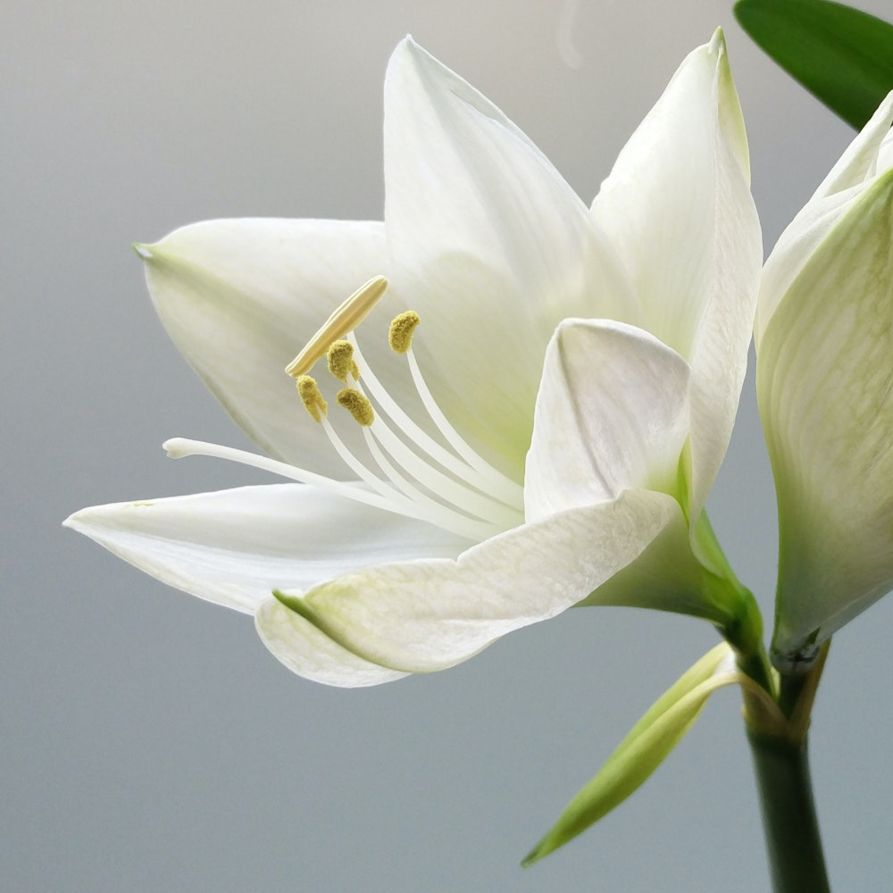

| Classes | Briófitas | Pteridófitas | Angiospermas | Gimnospermas |
|---|---|---|---|---|
| Vasos Condutores | Não | Sim | Sim | Sim |
| Flores | Não | Não | Sim | Não |
| Frutos | Não | Não | Sim | Não |
| Sementes | Não | Não | Sim | Sim |
| Filos | Marchantiophyta, Bryophyta e Anthocerophyta. | Lycopodiophyta e Monilophyta. | Anthophyt. | Coniferophyta, Cycadophyta, Gnetophyta e Ginkgophyta. |
| Porte | Pequeno porte (média de 10cm). | Grande porte (superior ás briofitas). | Extremamente variado entre 1mm e 100m. | São altas, podem atingir mais de 18 metros. |
| Ciclo de Vida | Alternância de gerações. | |||
| Habitat | Ambientes úmidos, próximos a locais de água-doce e com sombras. | Lugares escuros e úmidos. É fácil encontrá-las na Mata Atlântica e na Floresta Amazônica. | Ocorrem nos mais variados tipos de habitats, desde ambientes aquáticos até áridos. | Ambientes de clima frio ou temperado. |
Reino Plantae
O Reino Plantae, também chamado de Metaphyta, é composto por todos os organismos conhecidos como plantas ou vegetais. Estima-se que seja o primeiro grupo de habitantes pluricelulares a colonizar o ambiente terrestre.
As plantas formam a base da cadeia alimentar. Elas são produtoras de matéria orgânica e alimentam os seres heterótrofos, ou seja, representam o grupo responsável pela nutrição de diversos organismos consumidores. Isso indica que sem a existência desses seres autótrofos, a vida na terra seria impossível.
Características Gerais
- São todos eucariontes, ou seja, apresentam núcleo bem definido e delimitado pela carioteca (tipo de membrana) e possuem organelas membranosas;
- Todos são autótrofos, ou seja, são capazes de produzir sua própria matéria orgânica como fonte de energia;
- Além das organelas comuns a todos os seres vivos, possuem duas especiais: vacúolos e cloroplastos;
- Suas células são revestidas reforçadamente com uma parede celular de celulose.
- Estão presentes em praticamente todos os biomas terrestres, a maioria em terra firme mas existem espécies aquáticas;
- Por meio da luz solar, realizam o processo da fotossíntese e, por esse motivo, são chamados de seres fotossintetizantes.
Estruturas Macroscópicas Primitivas
Se tomarmos como exemplo os musgos, veremos que eles apresentam rizóides em vez de raízes, caulóide em vez de caule e filóides em vez de folhas. Supõe-se que essas sejam as estruturas iniciais que permitiram o desenvolvimento das demais:
Estruturas Macroscópicas Evoluídas
Raíz
Localizada geralmente no interior do solo, sua função principal é a absorção de água e minerais presentes no solo, para serem utilizados na fotossíntese.
Caule
Possui função estrutural e de suporte, dando resistência ao vegetal. Dependendo do vegetal o caule pode sofrer alguma variação: maior, menor, ramificado, único, etc.
Folhas
As folhas são órgãos localizados nas extremidades do caule. Juntos, formam a parte aérea do vegetal. Sua função é promover as trocas gasosas entre o vegetal e o meio externo e realizar a fotossíntese.
Flores
Presentes apenas em algumas plantas são as estruturas reprodutivas que contém órgãos reprodutores e gametas. Quando fecundados, formam as sementes.
Frutos
Os frutos também não estão presentes em todas as plantas, mas descendem das flores em que houve a fecundação, gerando as sementes e a diferenciação do ovário. A função é sempre a de proteger as sementes e promover a sua dispersão.
Classificação do Reino Vegetal
O Reino Vegetal é composto de plantas vasculares (pteridófitas, gimnospermas e angiospermas) que possuem vasos condutores de seiva, e plantas avasculares (briófitas), destituídas desses vasos.
Briófitas
Exemplos: Hepáticas, antóceros e os musgos.

Pteridófitas
Exemplos: Samambaias e avencas.

Angiospermas
Exemplos: Roseira, mangueira, grama, lírio, orquídea, coqueiro, entre várias outras.
Gimnospermas
Exemplos: Araucária, cedro, cica, cipreste, pinheiro e sequóia.
Teste seus conhecimentos! Responda ao nosso quiz